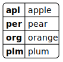

clean code
gergo.pinter@uni-corvinus.hu
software design and architecture stack
![based on Khalil Stemmel’s figure [1]](figures/the_software_design_and_architecture_stack_generalized.drawio.svg)
hierarchy in style guides
- language level:
- Python: PEP 8 or pep8.org
- Ruby: Ruby Style Guide
- Rust The Rust Style Guide
- etc.
- organization level:
not just style guides, also best practices

write idiomatic code
- a prog. language implements a prog. paradigm
- a paradigm defines a certain “way” of writing code
- using different abstractions / building blocks
- promoting a given concept
- some languages implements multiple paradigms
- and languages have their own way of doing things
- languages have pros and cons
- for a given problem

just as in the case of natural languages, you ought to use a language properly
meaningful names
this section is based on the book Clean Code (chapter 2) by Robert C. Martin [2]

use searchable names
Single-letter names can ONLY be used as local variables inside short methods. The length of a name should correspond to the size of its scope [2].
it’s OK to do this:
for i in range(10):
print(i)it’s NOT OK in a large scope:
int d; // elapsed time in days
avoid mental mapping
Readers shouldn’t have to mentally translate your names into other names they already know [2].


functions
this section is based on the book Clean Code (chapter 3) by Robert C. Martin [2]